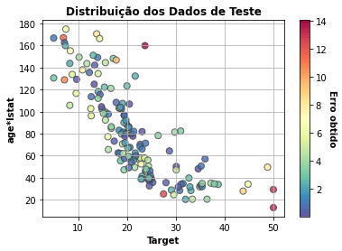
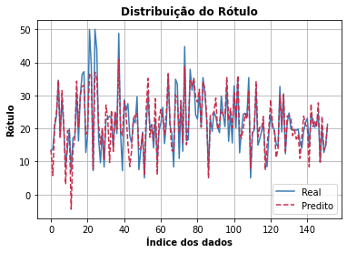
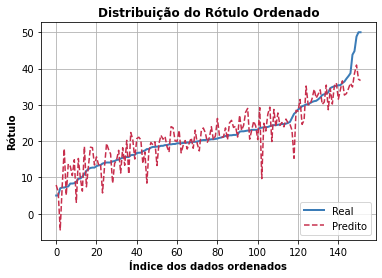
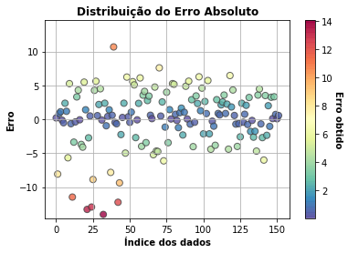
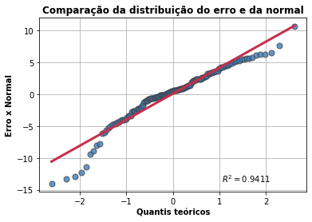

Este componente treina um modelo Random Forest para regressão usando Scikit-learn.Scikit-learn é uma biblioteca open source de machine learning que suporta apredizado supervisionado e não supervisionado. Também provê várias ferramentas para montagem de modelo, pré-processamento de dados, seleção e avaliação de modelos, e muitos outros utilitários.
Espera-se como entrada para o componente uma tabela com colunas que representam valores numéricos, categóricos ou de data. Os valores de data devem ser removidos ou selecionados para codificação ordinal para que o modelo consiga processá-los. A tabela deve ser de um dos seguintes tipos: Comma-separated values (.csv) ou Excel (.xls, .xlsx).
Na tabela abaixo, observamos os parâmetros necessários para que o componente funcione da maneira correta:
- Atributo alvo:
feature(Obrigatório).
Seu modelo será treinado para prever os valores do alvo. - Modo de seleção das features:
string, {"incluir","remover"}, padrão:"remover".
Se deseja informar quais features deseja incluir no modelo, selecione a opção ‘incluir'. Caso deseje informar as features que não devem ser utilizadas, selecione ‘remover'. - Features para incluir/remover no modelo:
feature.
Seu modelo será feito considerando apenas as features selecionadas. Caso nada seja especificado, todas as features serão utilizadas. - Features para fazer codificação ordinal:
feature.
Seu modelo utilizará a codificação ordinal para as features selecionadas. As demais features categóricas serão codificadas utilizando One-Hot-Encoding. - Número de estimadores:
integer, padrão:10.
Número de árvores na floresta. - Critério:
string, {"mse","mae"}, padrão:"mse".
Função para medir a qualidade de uma divisão. - Profundidade:
integer, padrão:None.
O máximo de profundidade da árvore. - Features:
string, {"auto","sqrt","log2"}, padrão:"auto".
O máximo de features a serem considerados ao procurar a melhor divisão. - Gráficos a serem ignorados:
string, {"Dados de Teste","Erro da Regressão","Diferença do Erro","Diferença Ordenada do Erro","Erro Absoluto","Probabilidade do Erro","Erro de Segmentos","Tabelas de Dados"}.
Considerando a quantidade de gráficos que são retornados ao executar a experimentação, o usuário pode selecionar quais ele não deseja visualizar.
As métricas de performance tem o propósito de ajudar o usuário a avaliar a performance do modelo. Essas métricas variam de acordo com o tipo de problema, tal como: classificação, regressão, agrupamento, entre outros.
- Coeficiente de determinação (ou R²): Corresponde à correlação ao quadrado entre os valores de resultado observados e os valores previstos pelo modelo.
- Erro médio absoluto (MAE): Média do erro absoluto considerando os valores de resultado observados e os valores previstos pelo modelo.
- Erro médio quadrático (MSE): Média quadrática do erro considerando os valores de resultado observados e os valores previstos pelo modelo.
O retorno durante a experimentação ajuda o usuário a analisar tanto métricas distintas de forma visual, como a distribuição dos dados e os dados brutos ao final da execução. Sendo assim, é possível visualizar diversos retornos para este componente como os listados a seguir:
- Dados de teste
Apresenta a distribuição dos dados de teste considerando as duas características mais relevantes para o modelo e o rótulo. - Distribuição do erro na regressão
Apresenta a distribuição do erro na regressão como uma estimativa de densidade do kernel. Significa que 95% dos erros estão abaixo da linha azul continua e 70% deles se encontram dentro da faixa vermelha. No eixo "Estimativa de densidade do kernel" pode-se entender que há mais erros daquela magnetude, olhar eixo "Erro obtido", para valores maiores de estimativa de densidade.
- Distribuição do rótulo
Apresenta a diferença entre o resultado observado e os valores preditos. - Distribuição do rótulo ordenada
Apresenta a diferença entre o resultado observado e os valores preditos de maneira ordenada. - Erro absoluto
Apresenta o erro absoluto considerando o resultado observado e os valores preditos. - Probabilidade do erro
Apresenta a comparação do erro e da normal. - Erro por segmento
Apresenta comparação da estimativa de densidade do kernel para segmentos distintos.
- Tabela dos dados
Apresenta visualização dos dados após o treinamento do modelo com a variável resposta e dados sobre o modelo.
O retorno durante a implantação se refere a tabela com os valores preditos para o atributo alvo. Sendo que, cada linha da tabela se refere a um registro enviado ao modelo.